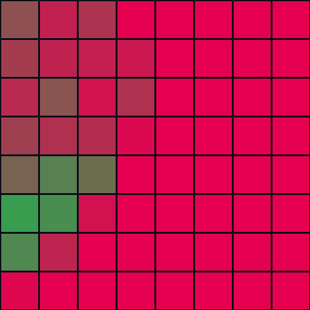

当前状态、证据与下一步。
这是项目的持续更新工程面板。它记录真实完成项、代码入口、端到端 workflow，以及仍被 OpenPI 训练契约或远程 GPU 阻塞的内容。不会把合成轨迹测试描述成真实 VLA 成功。
可选调速模块回归结果
这部分用于保证已有功能没有退化，不代表真实 VLA 已运行。
Baseline · 1.0×
Adaptive · 距离 + 稳定性
目标端到端架构
真实 VLA 验证默认绕过调速器；调速器只是后续可选层。
可选分支：16-D EEF Chunk → Adaptive governor → IK。VLA smoke test 和第一轮闭环不依赖此分支。
项目 Workflow
按证据门槛推进，避免直接把未知输出发给机器人。
仿真与硬件模型
G1、官方 Dex1-1、桌面、三色方块、碰撞、三路 RGB 相机、动作 schema 与自动测试。
OpenPI 契约恢复
取得或重建 OpenPI commit、训练 config、输入 repack transform、EEF 坐标系与 action horizon；已有 norm_stats 可直接复用。
VLA Smoke Test
只输入图片、状态和 prompt；检查输出形状、NaN、范围和左右手语义，不执行动作。
轨迹可视化
在 GUI 中画出 EEF 目标与整段 chunk，确认坐标、四元数和夹爪方向。
安全闭环仿真
VLA → 硬限制 → IK → Dex1 → MuJoCo；每 N 步重规划并处理超时动作。
批量评测与真机
随机化 episode、统计抓取/堆叠成功率；通过安全门后再进行悬挂与真机测试。
VLA 接入详细要求
这是向 checkpoint 作者索取资料以及恢复推理环境时的唯一核对入口。
OpenPI 版本
仓库 URL、Git commit、Python/JAX/Flax/Orbax 版本，以及 uv.lock 或 requirements。
完整 Config
config name、TrainConfig、DataConfig、pi0/pi0.5 类型、action_dim、action_horizon、dtype、asset_id。
Joint ↔ EEF Transform
字段 repack、FK/逆变换、EEF link/site、坐标系、单位，以及 state/action 的逐维定义。
Absolute / Delta
动作是绝对目标还是增量；delta 所在 frame、四元数乘法顺序和 chunk 累积方式。
Norm 与 Padding
使用 mean/std 还是 q01/q99、裁剪范围、16→32 padding/mask，以及输出 unnormalize 顺序。
Observation Keys
三路相机、state、prompt 的真实 key；RGB/BGR、HWC/CHW、resize/crop、数值范围和 image mask。
Chunk 执行契约
训练/推理频率、每次执行步数、replan interval、chunk 重叠和 temporal ensemble。
Golden Sample
三张图片、原始 state、transform/normalize 后输入，以及 unnormalize 后的预期 16-D action。
标定与场景
相机内外参、G1/Dex1 版本和 mount、EEF site、初始姿态、桌面/方块/接触参数。
外部信息清单
加载真实 checkpoint 前需要确认的最小训练与推理契约。
| 信息 | 需要的具体内容 | 状态 |
|---|---|---|
| Checkpoint 资产 | params、asset id、16-D norm_stats | 公开可用 |
| OpenPI 版本 | 训练使用的仓库 URL、Git commit、依赖 lockfile | 缺失 |
| 完整 Config | config name、TrainConfig、DataConfig、模型类型、action horizon/dim | 缺失 |
| 数据 Transform | 字段 repack、joint→EEF、坐标系、absolute/delta、四元数顺序、padding | 缺失 |
| 推理契约 | 三路图像 key、state/prompt key、预处理及输出后处理 | 缺失 |
| Golden sample | 一帧原始 observation、变换后 policy 输入和对应 16-D 输出 | 强烈建议 |
| 仿真标定 | EEF site、相机内外参、Dex1 mount、桌面和方块参数 | 当前为近似 |
代码与责任边界
当前工作区 ~/g1_vla_control/ 的主要入口。
| 文件 | 职责 | 当前状态 |
|---|---|---|
stack_scene.py | 组装 G1、Dex1、桌面、方块和三路相机 | 已验证 |
dex1_gripper.py | 官方 URDF/STL 接入与 0–5.5 rad 夹爪映射 | 已验证 |
action_schema.py | 16-D EEF、xyzw/wxyz 转换与 SLERP | 已验证 |
g1_dual_arm_ik.py | 双臂 IK、关节范围和速度裁剪 | 已验证 |
render_camera_observations.py | 生成三路 VLA RGB 观测和 contact sheet | 已验证 |
adaptive_retimer.py | 可选调速层，不属于 VLA smoke test 必需路径 | 可选 |
run_validation.py | 自动测试、JSON 证据、历史与 HTML 更新 | 已验证 |
dataset_contract_audit.py | 100 episodes 数据语义、时序、FK 与 norm_stats 取证 | 已执行 |
comprehensive_sim_validation.py | Dex1、抓持、250 目标 IK、长时间、扰动与随机化 | 已执行 |
visual_fidelity_audit.py | 三路 frame-0 物体可见性、中心与尺度差异 | 量化不匹配 |
checkpoint_metadata_audit.py | Orbax 参数树、模型族和 action padding 审计 | 结构可识别 |
run_deep_validation.py | 一键运行所有本地可行的深度验证 | 可复现 |
.github/workflows/validation.yml | Ubuntu headless CI 与证据 artifact | GitHub CI 已通过 |
OpenPI remote adapter | 真实 checkpoint WebSocket 推理 | 等待 config/GPU |
公开数据契约取证
不是根据文件名猜测，而是遍历全部 episode、执行 FK 并与 checkpoint norm_stats 对照。
关节空间绝对目标
前 14 维是左右各 7 个关节位置，最后两维是 Dex1 电机角；不是 raw EEF，也不是 delta action。
Pelvis-frame EEF
每侧 wrist_yaw_link 沿局部 +X 偏移 50 mm，位置在 pelvis frame，四元数为 xyzw。
约 3 帧响应延迟
action[t] 与 state[t+3] 的标准化 RMSE 最低；公开轨迹按 30 Hz 记录。
Episode 0 · 全 678 帧连续动力学回放
真实数据目标 IK
从 95,966 帧中随机抽样，joint action 经 FK 变为 EEF，再从对应 state 反解。
250 个真实目标
Dex1 几何与抓持
OOD 工作空间与碰撞压力测试
故意从宽于训练分布的体积随机采样，验证不能执行的目标是否会被安全拒绝。
1000 组双手随机目标

结论：IK 的关节裁剪有效，但仅靠裁剪不足以保证安全。接入真实 VLA 前必须增加可达性预检、碰撞预测和不可达目标拒绝。
动力学、鲁棒性与失败边界
明确记录通过项和失效阈值，而不是只展示成功案例。
30 秒稳定
Pelvis 最低 0.790 m；三块方块最大高度漂移 1.09 mm；全程无 NaN。
20/20
方块质量 0.08–0.30 kg、摩擦 0.3–1.3 及位置扰动下保持稳定。
连续通过至 20 N
40 N 测试倒地；60 N 测试底座漂移/倾斜超门槛，因此平衡只能标记为部分完成。
视觉域与 Checkpoint 结构
观测可用不等于训练域一致，结构可识别也不等于 checkpoint 可恢复。
Frame-0 视觉对照
Orbax Metadata
GitHub Actions 跨平台证据
两次 Workflow 来自两次连续 push；均在 Ubuntu 22.04 headless 环境完成。
两次均通过 13 项测试、两组动力学、三路 OSMesa 渲染、HTML 完整性检查和 artifact 上传。
当前仿真观测
MuJoCo 使用训练数据同名的三路相机。


验证矩阵
“部分完成”和“阻塞”不得表述为已经完成。
| 领域 | 验证门槛 | 状态 | 证据 / 下一步 |
|---|---|---|---|
| 公开数据 | 100 episodes / 95,966 帧契约审计 | 已验证 | 确认 raw parquet 为 14 关节绝对目标 + 2 Dex1 电机值，30 Hz |
| EEF Transform | joint → pelvis-frame EEF 重建 | 部分完成 | 50 mm wrist offset + xyzw 与 norm stats 高度吻合；最大统计差 0.013，尚非作者源码 |
| 动作接口 | 16 维双手 EEF schema | 已验证 | 逐维布局、维度和单位四元数验证通过 |
| 坐标边界 | pelvis EEF → world 与 xyzw ↔ wxyz | 已验证 | 转换函数及 round-trip/平移单测通过 |
| 轨迹插值 | XYZ 插值与四元数 SLERP | 已验证 | 最短路径与单位四元数测试通过 |
| 末端执行器 | Unitree 官方 Dex1-1 URDF/STL | 已验证 | 左右安装朝向验证；原 Menagerie 手已移除 |
| 夹爪映射 | 电机 0 closed / 5.5 open | 已验证 | 同步首帧确认方向；指尖间距 0.021–0.100 m 且左右对称 |
| 合成抓取 | Dex1 预定位方块抓持 | 已验证 | 零扰动左右 2/2；左手在 2 N 失效、右手在 4 N 失效；不是 VLA 抓取 |
| 真实目标 IK | 公开数据随机 EEF 目标回放 | 已验证 | 250/250 在 2 mm / 1° 门槛内收敛，关节范围 100% 合规 |
| 连续轨迹回放 | Episode 0 全 678 帧动力学执行 | 部分完成 | 全程有限且站立；EEF P95 约 20 mm，数据没有 object state 可核对任务 |
| 长时间动力学 | 30 秒站立、Dex1、桌面与方块 | 已验证 | pelvis ≥0.790 m，方块高度最大漂移约 1.1 mm |
| 随机化 | 20 组质量、摩擦与方块位置 | 已验证 | 20/20 保持机器人和方块稳定 |
| 跨平台复现 | GitHub Actions Ubuntu 22.04 headless | 已验证 | submodule、13 项测试、动力学、三路 OSMesa 渲染和 HTML 检查全部通过 |
| 外部扰动 | 躯干横向冲击恢复 | 部分完成 | 5–20 N 均恢复；40 N 倒地，60 N 漂移/倾斜超门槛 |
| 观测渲染 | 三路 640×480 RGB 相机 | 已验证 | 训练数据同名高位、左右腕相机均可渲染 |
| 视觉域一致性 | 参考 frame-0 像素几何与外观 | 部分完成 | 物体均可见，但中心/尺度、夹爪外观、照明和背景差异显著 |
| Chunk 连续性 | 多个连续 VLA action chunk | 部分完成 | 状态连续性单测通过；真实 VLA 多 chunk 尚未运行 |
| 安全约束 | 速度、加速度、jerk 与不可达拒绝 | 部分完成 | 关节范围保持 100%；宽域测试出现饱和/碰撞，显式可达性和碰撞拒绝器待补 |
| Checkpoint 结构 | Orbax 参数树与模型族 | 部分完成 | 强证据指向 Pi0Config(pi05=True)+LoRA；action pad=32、发布维度=16 |
| Checkpoint 恢复 | OpenPI config 与 inference contract | 阻塞 | 仓库没有 config/model card；仍缺 commit、DataConfig 和字段映射 |
| 任务指标 | 真实 VLA 抓取与堆叠成功率 | 待完成 | 合成抓持已测；真实 checkpoint 尚未加载 |
| 远程推理 | OpenPI WebSocket 与过期动作处理 | 待完成 | 等待 Ubuntu NVIDIA 服务器 |
| 真实 VLA | checkpoint 闭环推理 | 阻塞 | 需要匹配 config 和 NVIDIA 推理主机 |
| 真机 | G1 EDU 分阶段部署 | 待完成 | 仅在仿真安全门全部通过后进行 |
验证历史
每次自动验证后重新生成。
Validation run
已在“深度验证”Tab 增加两个 GitHub Actions Run 的独立卡片与直达链接：31452479374 和 31452596513，二者均为 SUCCESS。
Validation run
GitHub Actions Ubuntu 22.04 headless-smoke 已通过：13 项测试、baseline/adaptive 动力学、三路 OSMesa 渲染、HTML 完整性检查和证据 artifact 全部成功。
Validation run
深度验证补充：1000 组宽域 OOD 双手目标仅 1.4% 同时成功，35.8% 关节饱和、83.0% 出现禁区接触；关节范围始终合规，但明确证明接入真实 VLA 前必须增加可达性/碰撞拒绝器。
Validation run
13/13 项自动测试、baseline/adaptive 动力学和三路相机渲染全部通过。
Validation run
完成 comprehensive deep validation：100 episodes/95,966 帧数据审计、episode-0 全轨迹回放、250 个真实数据 IK 目标、1000 组宽域工作空间压力测试、Dex1 指尖/抓持、30 秒动力学、20 组随机化、5 档外部扰动、三路视觉域对照及 Orbax metadata 审计。
Validation run
完成 comprehensive deep validation：100 episodes/95,966 帧数据审计、250 个真实数据 IK 目标、Dex1 指尖/抓持、30 秒动力学、20 组随机化、5 档外部扰动、三路视觉域对照及 Orbax metadata 审计。
Validation run
11/11 项自动测试、baseline/adaptive 动力学和三路相机渲染全部通过。
Validation run
已从公开 GitHub URL 使用 --recurse-submodules 全新 clone，并在干净副本中验证 9/9 自动测试通过；两个官方 submodule revision 均可复现。
Validation run
项目已发布到 GitHub Public Repository：danielchen26/g1-vla-control；源码、测试、验证证据、HTML App 与两个官方模型 submodule 均已推送。
Validation run
9/9 项自动测试、baseline/adaptive 动力学和三路相机渲染全部通过。
Validation run
HTML App 已升级为四个独立 Tab；新增“VLA 接入需求”专页，集中展示九类详细资料要求和外部信息状态。
Validation run
已将真实 VLA 所需外部信息整理为逐项清单：OpenPI commit/依赖、完整 Config、数据 transform、推理字段契约、golden sample 与精确仿真标定。